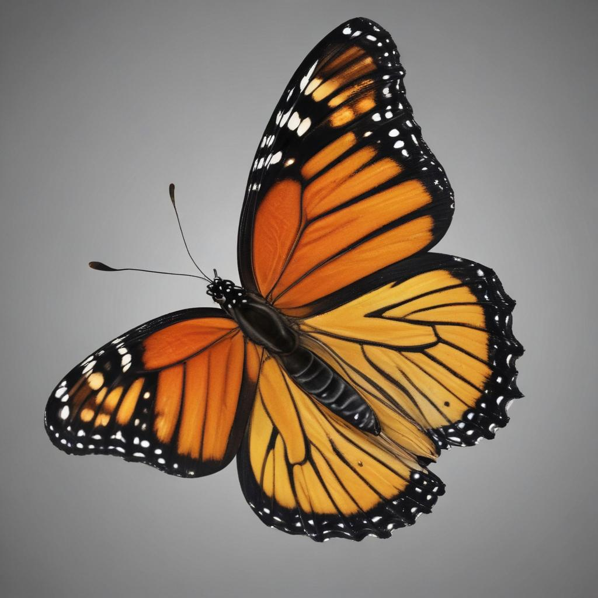

제비나비 소개

제비나비는 검은 날개에 제비꼬리처럼 생긴 아름다운 나비예요. 우아하게 날아다니는 모습이 마치 제비를 닮았다고 해서 이름이 지어졌어요.
제비나비의 특징
크기
날개를 펼치면 8~10cm 정도예요.
색깔
검은색과 노란색이 어우러진 아름다운 무늬가 있어요.
먹이
애벌레는 쥐방울덩굴을 먹고, 성충은 꿀을 먹어요.
생활
봄부터 가을까지 꽃과 숲에서 볼 수 있어요.
제비나비의 일생
알
암컷이 쥐방울덩굴 잎에 알을 낳아요.
애벌레
검은색과 노란색 무늬가 있는 애벌레가 자라요.
번데기
초록색 번데기가 되어 몸이 바뀌어요.
성충
아름다운 제비나비가 되어 꽃에서 꿀을 먹어요.
재미있는 사실
- 매우 긴 거리를 이동할 수 있어요.
- 독성이 있는 식물을 먹어도 괜찮아요.
- 화려한 색깔로 적을 경고해요.
- 꽃의 꿀을 먹고 살아요.